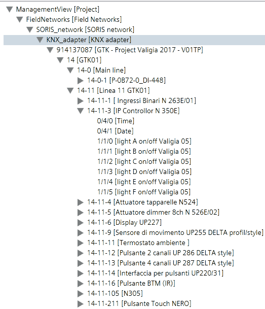

Discovering the Adapter Configuration
- You created the SORIS driver, network, and adapter manually or using the network wizard.
- System Manager is in Engineering mode.
- System Browser is in Management View.
- Select Project > Field Networks > [SORIS network] > [KNX adapter].
- In the Extended Operation tab, the Online property indicates
Connectedwhile the Discovery Status property indicatesIdle. - Next to the URL property, click Discover.
- System Browser displays the KNX configuration in a hierarchical structure of objects.
